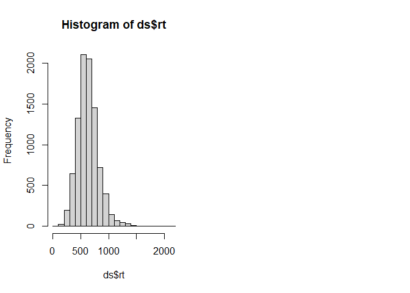

Introduction
AATtools provides tools to deal with data from implicit psychological tasks. It provides methods to compute reliability and aggregate data into bias scores.
Install it this way:
install.packages("AATtools")Rationale
Reliability scores are typically not computed for psychological tasks that produce scores. This has led to a literature with inconsistent results and methodological decisions that have been guided by intuition rather than empirical decisionmaking. AATtools tries to solve these problems by providing multiple methods of computing the reliability of the Approach-Avoidance task as well as other implicit psychological tasks. Importantly, it enables researchers to compute the reliability of their entire data processing pipeline, factoring in the influence of decisions to remove or keep outliers in the final reliability score. This gives the researcher a clear overview over how reliable the data are that have actually been used in the study’s analyses and enables them to explore the best ways to deal with non-normality, outliers and error trials.
Getting your data in the right format
AATtools works with long-format data.frames that follow a specific format. Your data.frame should contain one trial per row, and it should contain variables that designate the relevant conditions (approach/avoidance, control/target stimuli). For best results, approach and approach-associated stimulus categories should be indicated with a 1 while avoidance and avoidance-associated stimulus categories should be labelled with a 0.
Computing reliability
If your data is in the right format, you can get started right away. The aat_splithalf function allows you to approximate the reliability of any kind of summary score and data cleaning pipeline.
#This is a built-in dataset
dataset <- erotica[erotica$is_irrelevant==0,]
split <-
aat_splithalf(ds=dataset, #our dataset
subjvar="subject", #the column designating participant IDs
pullvar="is_pull", #the column designating approach (1) and avoidance (0) trials
targetvar="is_target", #the column designating target (1) and control (0) stimulus trials
rtvar="RT", #the column designating reaction times
iters=1000, #Set the number of bootstrapping iterations (more is better)
trialdropfunc="trial_prune_3SD", #Indicate whether outliers should be removed, and if so, how
casedropfunc="case_prune_3SD", #Indicate whether outlying approach bias scores should be removed
algorithm="aat_dscore", #The algorithm by which approach bias scores should be computed
plot=F #Should the results be plotted immediately?
)
print(split)##
## Full-length reliability (Raju's beta):
## beta (57.905) = .68, 95%CI [.54, .78], p = 0
##
## Uncorrected, average split-half correlation:
## r (57.905) = .52, 95%CI [.37, .65], p = 0
plot(split)
Alternatively, you can use q_reliability to compute an exact reliability score for your data.
An exact reliability score for all implicit tasks with difference scores: q_reliability()
This function computes the reliability of the task in one go and without performing many splits, saving time.
q_reliability() performs a linear regression to the data of each participant, and derives the unstandardized beta and variance of one of the predictors. If this predictor is the intercept, the resulting beta is functionally equivalent to the simple mean reaction time of the participant; if it is a binary main effect, the beta is equivalent to the difference between condition 1 and condition 0; and if it’s an interaction term, the beta is equivalent to a double-difference score. The variance among betas is then compared to the overall variance within betas. q_reliability2() computes the within- and between-subjects variance without performing any regressions and is thus faster and more accurate. It allows for the computation of reliability for single or double mean difference scores, as well as any difference scores standardized by the participant’s standard deviation. The reliability computed by q_reliability() and q_reliability2() represents the ratio between between-subjects variance and within-subjects variance, where 0 means there is equal variance within and between subjects, and 1 means the bias scores are entirely accurate. These functions do not factor in variability caused by the outlier rejection rules that the researcher used; therefore, they cannot model the confidence intervals for the reliability coefficient.
dataset_relevant <- erotica[erotica$is_irrelevant==0,]
dataset_irrelevant <- erotica[erotica$is_irrelevant==1,]
# Reliability of the relevant-feature AAT
qreliability_relevant <-
q_reliability(ds=dataset_relevant, #the data
subjvar="subject", #the name of the column containing participant IDs
formula=RT~is_pull*is_target, #Here we specify the way bias scores are to be computed (see above)
aatterm="is_pull:is_target" #The term in the regression formula which represents the bias score
)
print(qreliability_relevant)## q = 0.6676301
# Reliability of the irrelevant-feature AAT
qreliability_irrelevant <-
q_reliability2(ds=dataset_irrelevant,
subjvar="subject",
splitvars=c("is_pull","is_target"),
rtvar="RT"
)
print(qreliability_irrelevant)## q = -0.2478222Computing Cronbach’s alpha for your experiment
Cronbach’s alpha is a common, but suboptimal method to compute the reliability of psychological experiments. In the context of the AAT, approach bias scores are computed per stimulus for each participant, after which Cronbach’s alpha is computed by treating each stimulus approach bias score as a separate item in a questionnaire. This method does not take into account variability in raw reaction times and is heavily dependent on the number of stimuli included in the experiment, rather than the number of trials as a whole. Despite its inaccuracy, it has been included for the sake of completeness.
dataset <- erotica
#This dataset is unfortunately not suitable for the application of this method. We artificially make it compatible by pretending there are only 10 stimuli per category rather than 40.
dataset$stimulus<- substr(as.character(dataset$stimulus),5,5)
#We use the special jackknife function, which allows us to diagnose flaws in the experiment by computing Cronbach's alpha while single stimuli or participants are excluded.
alpha<-aat_covreliability_jackknife(ds=dataset, #The dataset
subjvar="subject", #Name of the column with participant IDs
stimvar="stimulus",#Name of the column with stimulus IDs
pullvar="is_pull", #Name of the column indicating approach or avoid trial
rtvar="RT", #Name of the column indicating reaction time
algorithm="calpha") #Reliability computation method. calpha is Cronbach's alpha## Warning in if ("cross" == holdout) {: the condition has length > 1 and only the
## first element will be used
print(alpha)## Reliability: r = .21
## Maximum achieveable reliability is with removal of participant 56: r = .27
## Maximum achieveable reliability is with removal of stimulus 3: r = .28
plot(alpha)
Computing confidence intervals for bias scores
The aat_bootstrap function can be used to compute bias scores from random permutations of the data, and derive per-participant confidence intervals from these bootstrapped bias scores. This lets users quantify for which participants the bias scores are accurate and for which participants they are not. This method also allows for the computation of reliability through bootstrapping.
dataset <- erotica
boot <-
aat_bootstrap(ds=dataset,
subjvar="subject",
pullvar="is_pull",
targetvar="is_target",
rtvar="RT",
iters=1000,
trialdropfunc="trial_prune_3SD",
algorithm="aat_dscore",
plot=F
)
print(boot)## Bootstrapped bias scores and confidence intervals
## Mean bias score: 0.1381435
## Mean confidence interval: 0.8862338
## reliability: q = 0.3243185
## Number of iterations: 1000
plot(boot)
Computing bias scores
The aat_compute function can be used to compute bias scores. This can save a lot of coding time.
dataset_relevant <- erotica[erotica$is_irrelevant==0,]
dataset_irrelevant <- erotica[erotica$is_irrelevant==1,]
relevant_scores <-
aat_compute(ds=dataset_relevant, subjvar="subject", pullvar="is_pull", targetvar="is_target",
rtvar="RT", trialdropfunc="trial_prune_3SD", algorithm="aat_dscore")
irrelevant_scores <-
aat_compute(ds=dataset_irrelevant, subjvar="subject", pullvar="is_pull", targetvar="is_target",
rtvar="RT", trialdropfunc="trial_prune_3SD", algorithm="aat_dscore")
all_scores <- merge(relevant_scores,irrelevant_scores, by="subject", all=T)
plot(all_scores$ab.x,all_scores$ab.y)
Evidently, there is no relationship between relevant-feature and irrelevant-feature bias scores in this dataset.
Simulating datasets
For the sake of power analysis or methodological research, it may be desired to generate a random dataset. aat_simulate() can be used for this purpose. A lot of parameters can be adjusted, but one can opt-in to use default values derived from pre-existing datasets as well.
ds<-aat_simulate2(defaults="Lender2018_relevant_clean")
par(mfrow=c(1,2))
hist(ds$rt)
q_reliability2(ds=ds,subjvar="subj",splitvars=c("is_pull","is_target"),rtvar="rt",dscore=T)## q = 0.686825